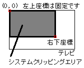
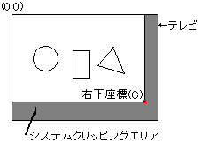
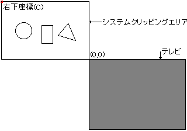

★
HARDWARE Manual
★
VDP1ユーザーズマニュアル
★
第７章 コマンド
▲
戻る
｜
進む
▼
VDP1ユーザーズマニュアル/第７章 コマンド
■7.1 システムクリッピング座標設定コマンド
クリッピングとは、設定した表示領域以外の領域には描画しないよう切り取る(クリップする)ことです。クリッピングにはシステムの描画領域を設定するシステムクリッピングと、ソフトウエアで自由に設定することのできるユーザクリッピングがあります。
コマンド選択ビット(ビット3〜0)が1001Bのときシステムクリッピング座標設定コマンドで、1000Bのときユーザクリッピング座標設定コマンドです。
システムクリッピング座標設定コマンドのテーブルの内容は次のとおりです。
ビット
15
14
13
12
11
10
９
８
７
６
５
４
３
２
１
０
CMDCTRL
+00
0
JP
0
0
0
0
0
0
0
0
1
0
0
1
CMDLINK
+02
LINK指定/8H
0
0
+04
+06
+08
+0A
+0C
+0E
+10
+12
CMDXC
+14
0
0
0
0
0
0
右下Ｘ座標(XC)
CMDYC
+16
0
0
0
0
0
0
0
右下Ｙ座標(YC)
+18
+1A
+1C

【注】
は無視されます(don't care)
システムクリピング座標設定コマンドは次のように定義します。
エンドビット(ビット15)を0Bに、コマンド選択ビットを1001Bに設定すると、システムクリッピング座標設定コマンドになります。
ジャンプ形式を指定します。ジャンプ形式がアサインまたはコールのとき、次に処理するコマンドテーブルのアドレスを8Hで割ってCMDLINKに設定します。
クリッピング領域の右下座標をCMDXC、CMDYCに定義します。左上座標は(0,0)固定です。左上座標(0,0)と右下座標(XC,YC)とで表す矩形(四角形)のライン上と内側が描画領域となります。
●システムクリッピング
システムクリッピング座標は、描画の際かならず有効になり、設定した領域の外側がクリッピングされます。つまり内側が描画されます。
クリッピング処理は矩形で行われます。指定方法は、左上座標は(0,0)固定なので、右下座標(XC,YC)の値をコマンドテーブルに定義します。
クリッピング座標のチェックは行われないので、あらかじめXC≧0、YC≧0になるように設定してください。XC＜0、またはYC＜0に設定された場合は、動作は保証されません。
クリッピングライン上の点は、クリッピング領域の内側として扱われ描画されます。
クリッピング座標セットコマンドは内部のクリッピング座標レジスタを書き換えます。書き換えられた以降のパーツはその値を参照して描画されます。
このコマンドは1フレーム内にいくつでも定義できますので、パーツ群ごとに違ったクリッピング座標を持たせることができます。
システムクリッピング座標は、電源投入後またはリセット後は、値が不定なので、描画開始前に設定する必要があります。
図7.1 システムクリッピング
(a) システムクリッピングの設定

領域の内部が表示されます
(b) 誤ったシステムクリッピングの設定

XC<0、またはYC<0に設定された場合は、動作の保証はされません。
▲
戻る
｜
進む
▼
★
HARDWARE Manual
★
VDP1ユーザーズマニュアル
★
第７章 コマンド
Copyright SEGA ENTERPRISES, LTD., 1997
 ★HARDWARE Manual
★VDP1ユーザーズマニュアル
★第７章 コマンド
★HARDWARE Manual
★VDP1ユーザーズマニュアル
★第７章 コマンド
★HARDWARE Manual
★VDP1ユーザーズマニュアル
★第７章 コマンド
★HARDWARE Manual
★VDP1ユーザーズマニュアル
★第７章 コマンド